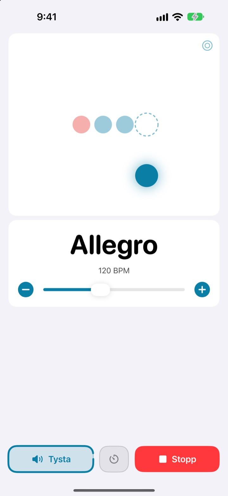
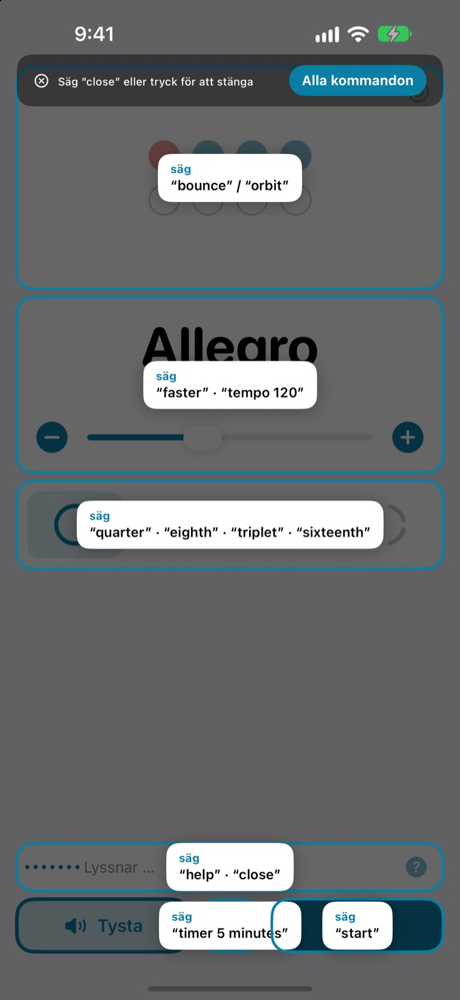
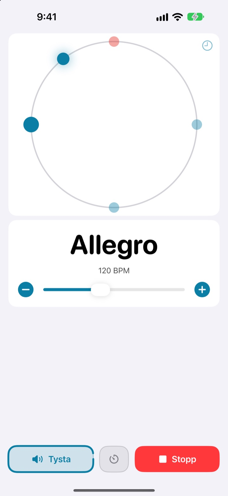
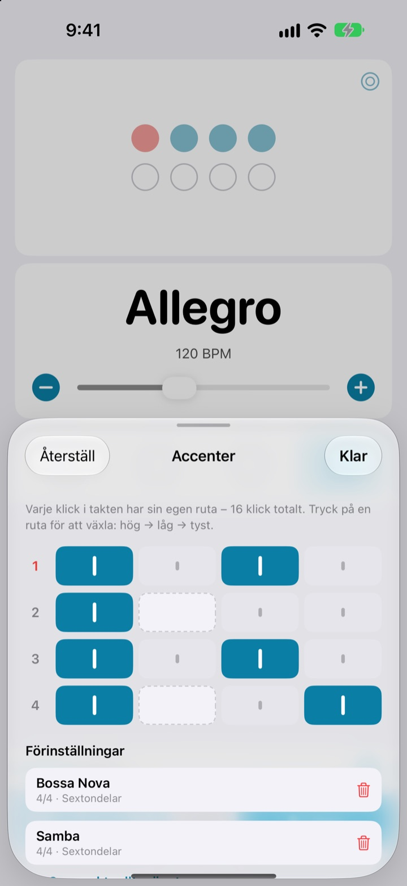

Händerna på instrumentet.
Tempot med rösten.
Säg faster mitt i frasen så går klicket snabbare. Du behöver varken sluta spela eller sträcka dig efter skärmen. Kommandona är korta engelska ord.
Hela metronomen och röststyrningen är gratis.

Testa högt
Tryck på ett kommando, eller slå på mikrofonen och säg det på engelska. Höj volymen, det klickar.
Har du tappat flytet bara för att justera tempot?
Lägg ifrån dig stråken, bit i plektrumet, tryck två gånger på skärmen, och känslan du just hittade är borta. Med Not My Tempo byter du tempo med ett enda ord, precis där du står.
Säg det, så följer den med
Korta engelska ord som start, faster och tempo 120. Appen lyssnar så fort du öppnar den, utan att du behöver slå på röststyrning i iOS eller någon tillgänglighetsinställning.
Glömt ett kommando? Säg help så visas allt du kan säga på skärmen.

Se slaget också
Välj mellan studs, omlopp och ring. Första slaget är rött och klickar starkare.
Tryck i takt på omloppet så ser du hur nära du hamnade.

Spara accenterna för varje låt
Ställ in varje klick i takten som högt, lågt eller tyst och spara det som en förinställning. Bygg bossa nova- eller sambamönstret en gång och välj det bara nästa gång. (Pro)

Tre steg för att komma igång
- 1
Öppna appen
Den börjar lyssna direkt.
- 2
Tillåt mikrofonen
Den frågar en gång om mikrofon och taligenkänning.
- 3
Prata eller tryck
Varje kommando har också en kontroll på skärmen.
Det här kan du säga
- start · stop
- spela, pausa
- faster · slower
- 5 BPM snabbare eller långsammare
- up · down
- 1 BPM snabbare eller långsammare
- tempo 120
- hoppa direkt till ett tempo
- double · half
- dubbelt så snabbt, hälften så snabbt
- three beats
- byt taktart
- quarter · eighth · triplet · sixteenth
- underdelning i fjärdedelar, åttondelar, trioler, sextondelar
- louder · quieter · mute
- klicket starkare, svagare, tyst
- volume 60
- ställ in volymen i procent
- bounce · orbit
- byt slagvy
- timer 5 minutes
- ställ in en övningstimer
- practice
- tempot ökar medan du övar (Pro)
- tune
- öppna stämapparaten (Pro)
- help
- visa alla kommandon
- close · done
- stäng en panel
Taligenkänningen använder amerikansk engelska, så kommandona säger du på engelska. Appen i övrigt är på svenska, och alla kommandon går också att ge med ett tryck.
Metronomen är gratis. Pro finns när du vill ha mer.
Gratis
- Alla röstkommandon
- Taktarter från 1 till 8 slag, med betonat första slag
- Underdelning i fjärdedelar, åttondelar, trioler och sextondelar
- Tre vyer: studs, omlopp och ring
- Tapptempo och timingkontroll
- Övningstimer
Not My Tempo Pro
- Övningsläge: några BPM till med några takters mellanrum tills du når ditt måltempo
- Accenteditor med förinställningar per låt
- Kromatisk stämapparat
Årsprenumeration med gratis provperiod, eller ett engångsköp för alltid
Röststyrning och tillgänglighetsfunktioner förblir gratis för alla. Köpte du appen innan Pro fanns? Då har du redan alla Pro-funktioner.
Vanliga frågor
Kan jag prata svenska?
Taligenkänningen använder amerikansk engelska, så kommandona är korta engelska ord som start och faster. De sitter snabbt, och alla kommandon går också att ge med ett tryck. Resten av appen är på svenska.
Den hör mig inte.
Kontrollera att mikrofonstatusen är ”Lyssnar”. Om den är av trycker du på ”Lyssna”. I ett bullrigt rum eller när du spelar via högtalare hjälper hörlurar, så att klicket inte läcker in i mikrofonen.
Lyssningen stängdes av av sig själv.
För att spara batteri slutar appen lyssna om inget kommando kommer på några minuter. Tryck på ”Lyssna” för att slå på den igen.
Tempot blev hälften eller dubbelt.
Säg double eller half för att rätta till det.
Hur använder jag stämapparaten?
Säg tune eller tryck på vågknappen på tempokortet. Spela en ton: när indikatorn hamnar i den gröna zonen är du rent stämd. Säg close för att stänga.
Jag använder redan röststyrning i iOS.
Stäng av appens egen mikrofon och styr med knapparnas namn i stället. Alla kontroller har VoiceOver-etiketter.
Skickas min röst någonstans?
Nej. Talet känns igen på din enhet och spelas aldrig in, sparas eller laddas upp. Metronomen, röststyrningen och stämapparaten fungerar utan internet.
Hur säger jag upp prenumerationen?
I Inställningar > Apple-konto > Prenumerationer. Årsprenumerationen förnyas automatiskt om du inte säger upp den minst 24 timmar innan perioden går ut. Köp för alltid betalas en gång.
Frågor eller synpunkter? Skriv till leeo@kakao.com.